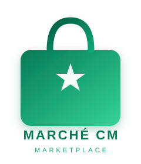
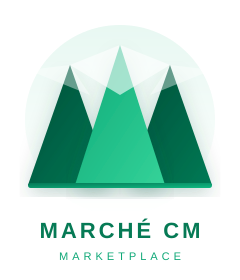
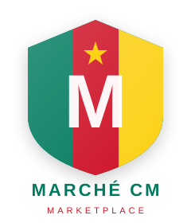
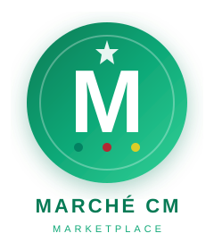

4 concepts distincts · Cliquez pour voir les détails

Sac de shopping avec dégradé vert profond. L'étoile blanche à l'intérieur rappelle le drapeau camerounais. Icône simple, reconnaissable, parfaite pour une app mobile.

Trois sommets forment naturellement la lettre M (comme Marché). Référence au Mont Cameroun, le plus haut sommet d'Afrique de l'Ouest. Dégradé vert avec neiges sommitales blanches.

Bouclier avec les 3 couleurs verticales du drapeau camerounais (vert, rouge, jaune). La lettre M blanche s'impose au centre avec l'étoile nationale dorée. Look officiel et patriotique.

Cercle plein avec dégradé vert (comme l'app), M blanc centré, étoile en haut. Trois points vert/rouge/jaune rappellent le Cameroun discrètement. Style tech, propre, polyvalent.
Combine le cercle vert dégradé de l'Option 4 avec les éléments du logo existant : flèches d'échange commerce (Afrique ↔ Chine), couleurs du drapeau camerounais (vert / rouge / jaune), étoile nationale, texte CENTRAL MARKET. Le "CM" garde le dégradé tricolore du splash screen.